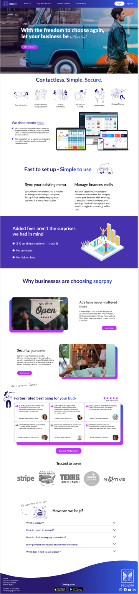

responsive web design – Nov 2020
seqrpay
User comprehension of seqrpay improved by 75%.
Table of Contents
-
face1. The Client
-
fingerprint2. Key Artifacts
-
edit3. Writing the Copy
-
build4. Site Architecture
-
compare5. Fidelity Comparisons
-
beenhere6. Outcome

The Client
Our client was seqrpay – an Austin-based startup.
In two and a half weeks, they needed a responsive website designed that could clearly inform millennials and small business owners about seqrpay.
Our design team worked with stakeholders - identifying user needs and their experiences - to design a responsive site ready for development.
What I Did
Conducted user research, developed user insights, wrote and oversaw UX copy, sorted information architecture, chose visual design elements, and conducted usability testing.
-
pie_chartThe Team
Brian Rainey – UX Designer
Carl Booker – UX Designer
Madison Smith – UX Designer
Monica Garza – UX Designer
Theresa Morgan – UX Designer
What We Made
The Problem
The life of a food truck vendor - of a small business owner - is punctuated by high transaction fees, incompatible ordering solutions, and fragmented payments. Target users had no way to learn about how seqrpay solves this problem for both the small business and their guests. A solution is nothing unless it can be understood.
The Objective
We needed to make a prototype site in two weeks that would be reponsive across desktop and mobile. The site would clearly convey seqrpay's solution. We also needed to be designing in a way that would be optimal for structuring a design system and in such a way that could be easily passed off to development.
Challenges & Approach
We had only two weeks to work and schedules could not be coordinated between the design team and stakeholders. We began with very little info about what exactly the site needed to convey. That is, all we really knew is that the solution would somehhow utilize QR technology and that it would primarily target food truck owners and millennials.
Thus, we conducted a lot of secondary research and relied on our shared experiences to fill in the gaps. I Personally brought six years of experience in the Food & Service Industry to inform food service operations and end-user needs. While Monica's experience of having been an esthetician was also helpful in understanding a small business perspective.
Two distinct users that would be using the site were identifed: the food truck owner and the guest of the business; millenials. Thus, we knew that proto-personas would be helpful artifacts to develop.
We still did not know exactly what we were dealing with so we examined the full scope of the environment our two users were situated in and how they interacted typically. Heuristic and competitor analyses of direct and indirect competitors’ websites and offerings were conducted as we began this sprint. Below depicts the hueristic analysis I performed of a design agency's website as inspiration for what our own site might look and feel like.
The beginning of this project felt, admittedly, a bit sporadic. The team was doing everything possible to fill in gaps and get the full picture without ever knowing whether or not we were really headed in the right direction. Artifacts that were developed were critical to that direction and ultimately led us exactly where we needed to be once we were able to meet with stakeholders.

A storyboard was useful for visualizing a potential interaction between our users. Especially since we were still unsure of exactly what they would be interacting with.

Deductive ideation using key words identifed during research helped to extrude the essence of what seqrpay would communicate.

Sketches were used to visualize what possible pages could look like as we planned to move into the structure of the site.
Moodboards were developed by each team member throughout the entire design process. This board represents the synthesis of all our boards. A moodboard might not have been used had we been able to meet with stakeholders from the offset.
At this point we had been able to meet with stakeholders and could finally begin fleshing out specifics and working towards the main objective: consicely conveying seqrpay’s solution, first, with the copy.
We hypothesized that, if we could do this effectively, the other arguable foci – adoptability, comprehension, garnering trust, images displayed on the site, CTA colors, etc. – would all follow suit. So, in a word, the focus of this project was...words.
We found word choice surrounding mobile point-of-sale systems in the service industry to be very polarizing. One challenge we were facing was the damage that early mobile point of sale systems had done. This provided further proof that site copy needed to be recieved well by our users.

UX copy as viewed on mobile.

UX copy as viewed on mobile.
Readability
Users needed to be able to grasp an understanding of seqrpay at-a-glance. Otherwise, we'd lose them. Having a firm grasp on UX copy, deciding how to visually convey the solution through UI was made that much easier. The aim was for UI to reflect copy.
Confident of the discerning reader being satiated through site copy, the resulting UI would ensure the site's ability to capture the user that is more keen on visual elements than written content.
Site Architecture
With copy and UI elements becoming more concrete, we needed to decide exactly where they would go; we needed to figure out the architechure of information.
Some key questions we needed to answer: How many pages would we need? Does the functionality of the solution imply the need for a consumer portal on the site? Who will the primary visitor of the site be of our two users? Small business or consumer?
Card Sorting would help to answer these questions as well as providing the structure. This would be a critical step too. Just like the copy, if it was not right, users would get lost, confused, or lose interest in learning about seqrpay. If they were not able to navigate through the site in a dynamic, yet, funneled way, we could lose potential customers to competitor sites.

The purpose of this page is to be explicit and tested well in that regard with users.
A Key Page
The "How it works" page, identified from earlier heuristic and competitor analyses, was noted as frequently utilized and key to user comprehension. Without this page we would have an incomplete site and confused users Later user tests would confirm that this page was useful for understanding seqrpay.
Testing
With structure in place and filled copy and UI we needed to test the full solution. Earlier in the process we had conducted comprehension testing of individual pages at lower fidelity levels. This is how we were able to perfect the copy as well as gain insights towards how that copy could inform UI. This round of testing focused on the fully-linked, high-fidelity prototype which I'd put together using Figma.
We focused on testing small business owners. They were revealed as the primary user of our two possible end-users during card sorting.
We were ecstatic to see results indicating that user comprehension of seqrpay had improved by 75%. Previously, it was taking as long as one minute for users to comprehend seqrpay. In other words, we got time-to-comprehend down to 15 seconds. This was the chosen metric for success being that 15 seconds is the statistical amount of time a user will decide to continue reading or not.
Low-fi

Mid-fi

High-fi (Final)
Outcome
This was a an extremely exciting and fun project for me to work on as it provided real experience working with stakeholders on something they really cared about and had already been working very hard on.
It involved myriad research resulting in a fun, infomative, and dynamic design. However, designing for multiple user types – small business owner and consumer – was a constant challenge. Not to mention inital lack of scope and keeping in mind that we were not developing a solution, but instead, we were trying to convey that solution and best organize the exploration of that solution for the two users. Still, because of the balanced team we had, it was managable.
Though we were on a very tight deadline and we had to spend a lot of time in research and ideation, we successfully handed off a final product that we knew would clearly convey seqrpay's solution, meet their user's needs, and that exceeded stakeholder expectations.
Moving forward, we would would test the live site for usability and begin to do research with actual food trucks who had been using seqrpay's point-of-sale system. Assessing the confluence of site and actual product would guide us in seeing where improvements needed to be made regarding the product, how that might affect the site, and where the site might be lacking – strickly from a design perspective.